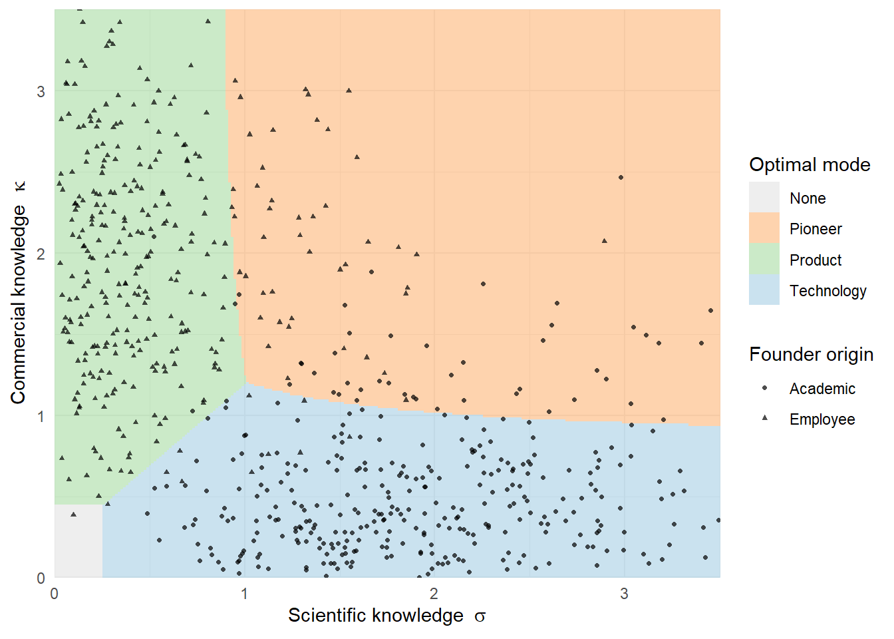

flowchart LR
U["University /<br/>public laboratory"]
F["Incumbent firm<br/>in the industry"]
C["Use context<br/>(unmet need)"]
S["Scientific knowledge<br/>codified, novel, patentable"]
K["Commercial knowledge<br/>customers, channels, regulators"]
N["Need knowledge<br/>problem definition"]
V["Venture knowledge profile"]
H["Inherited practices<br/>and culture"]
U --> S
F --> K
C --> N
S --> V
K --> V
N --> V
F -.-> H
H -.-> V
28 Entrepreneurship and New Ventures
The preceding chapter treated entry as something firms do: an established organization decides when to bring a product into a category and how to defend the position it takes. But a large share of entry is performed by organizations that did not exist before the entry decision was made. The founding of a firm is simultaneously an entry decision, a resource-assembly decision, and a positioning decision, and it is made by people whose knowledge was accumulated somewhere else—in a university laboratory, in an incumbent’s product division, or in the course of using a product and finding it inadequate.
This chapter develops the resulting research program. Its organizing claim is that the origin of a founder’s knowledge is a strategically consequential variable, and that it predicts not merely how well a venture performs but what kind of economic value the venture is able to capture at all. A venture founded on scientific knowledge and a venture founded on industry knowledge are not two draws from the same distribution with different means; they are firms solving different problems, transacting in different markets, and failing in different ways. Treating founder origin as a control variable in a performance regression discards exactly the variation that matters.
We proceed in four movements. Section 28.1 establishes the knowledge-origins taxonomy and the evidence that founders carry more than human capital out of their prior organization. Section 28.2 defines modes of value capture and develops the chapter’s central result: the correspondence between where knowledge came from and which market a venture monetizes in. Section 28.3 formalizes that correspondence and shows why the interesting founders are the ones who fit neither category. Section 28.4 and Section 28.5 then turn to founding-team composition and to the evaluation problem ventures face when they seek resources from investors, regulators, and employees. Section 28.7 closes with what marketing has to contribute to a literature that has so far been written almost entirely without customers in it.
A methodological thread runs underneath. Much of the best work here is descriptive: it maps a pattern rather than estimating a treatment effect. That is a deliberate design choice with its own standards of rigor, and it is treated as a craft problem in Section 74.3.
28.1 Where Ventures Come From: The Knowledge-Origins View
The foundational move in this literature is to stop treating “entrepreneur” as a homogeneous category. Agarwal and Shah (2014) organize firm formation around three distinct knowledge sources, each associated with a different pre-founding context.
Academic entrepreneurs commercialize knowledge generated in scientific research, typically at universities or public laboratories. Their knowledge is codified, novel, and often protected by patents assigned to or licensed from the parent institution. It is deep on the technical dimension and thin on everything downstream: who the customer is, what the distribution channel looks like, how a regulator will react.
Employee entrepreneurs (also called spinouts) leave an incumbent firm in the same or an adjacent industry. Their knowledge is the mirror image: rich in customer requirements, supplier relationships, pricing norms, and the tacit operating detail of an industry, but bounded by the technological trajectory the parent was already on.
User entrepreneurs found firms on knowledge generated by using a product and encountering an unmet need. Their knowledge is neither scientific nor producer-side; it is need knowledge, and it explains why user-founded firms cluster in categories where the need is legible to those who experience it and invisible to those who do not.
The taxonomy matters because it predicts different founding rates, different entry timing relative to industry emergence, and different survival profiles. The evidence that founders carry organizational content, and not merely skill, out of the parent is by now substantial.
Zucker, Darby, and Armstrong (2002) supply the original demonstration on the academic side. Studying biotechnology, they show that firm performance is tied to the capture of university science by identifiable star scientists working with the firm, not to proximity to universities in the abstract. Knowledge moved with people, and the firms that got the people got the performance.
Feldman, Ozcan, and Reichstein (2019) extend the claim from knowledge to practice. Using survey and registrar data on spawns and their parents, they find that organizational practices transfer from parent to spinout: the overlap in practices between a spawn and its parent is roughly ten percent greater than between the spawn and other established firms, and about seventy percent of comparisons show start-ups to be less similar to unrelated organizations than parents are to their spawns. Crucially, transfer is selective. The practices that travel are the ones that fit a start-up’s requirements and are clearly defined and causally unambiguous. Heritage is not wholesale replication; it is a filtered inheritance.
Ahn and Greve (2025) push the same logic into culture. Linking Crunchbase start-ups to natural-language measures of culture derived from Glassdoor reviews, they show that founders transmit cultural elements from the parent organization, and that transmission is stronger when the founder’s tenure at the parent was longer, when the parent’s culture was internally coherent, and when it was atypical relative to other organizations. The contingencies are the contribution: an incoherent parent culture supplies no transmissible toolkit, and a generic one supplies nothing distinguishable.
Finally, the pathway into founding is itself structured by employment. Law et al. (2025) follow more than eight thousand individuals through the Venture For America program and find that working as a start-up employee raises the likelihood of later founding—and that this joiner-to-founder effect is markedly stronger for Black women than for other demographic groups. Their qualitative evidence points to self-reflection prompted by the start-up employment experience as a mechanism. The result is a reminder that the supply of founders is not exogenous to the organizations that employ them.
Figure 28.1 summarizes the pathway from prior context to venture.
28.1.1 What makes founding salient
Origin explains what a founder brings. It does not explain when the decision to found gets made, and the trigger turns out to be partly a marketing artifact. Huang et al. (2026) study entry onto a large Chinese e-commerce marketplace and find that individuals are more likely to open an online store after observing the salient success of a nearby one. The source of variation is the platform’s own store rating system: when a local store’s rating is upgraded, new store entries in the vicinity rise significantly. The effect decays with physical distance and strengthens with the salience of the upgrade—the two gradients a salience account predicts, and the reason the result is not simply local demand information diffusing.
The second half of the paper is what makes it worth teaching. The entries induced by a local upgrade event are worse: they underperform in sales and are more likely to exit, and the excess exit concentrates in downturns in overall market conditions. That asymmetry is the discriminating test. If a neighbor’s rating upgrade revealed genuine unexploited local demand, entrants responding to it should do at least as well as other entrants; that they systematically do worse is consistent instead with salience-based decision making, in which highly visible local information is overweighted relative to its actual diagnosticity (Bordalo, Gennaioli, and Shleifer 2013)—the same primitive that a salience nudge perturbs (Section 19.1).
Two implications follow for marketing. First, on the supply side of entry: the entry-order literature in Chapter 27 takes the set of entrants as given and asks who moves when, but the composition of that set is being set in part by which local successes happen to be visible, and visibility is manufactured by a rating system. Second, on platform design: a ratings mechanism built to solve a buyer-side information problem also functions as an entry-inducement device on the seller side, and it induces the marginal entrant least equipped to survive a downturn. That is an externality of the design, not of the market, and it belongs with the other realized externalities of platform structure in Section 68.7.1.
28.2 Modes of Economic Value Capture
The knowledge-origins taxonomy becomes strategically interesting only when it is connected to an outcome that is categorical rather than scalar. That outcome is the mode of value capture.
Definition: modes of economic value capture
A venture founded on a technological opportunity may realize economic value in one of two markets. In the market for technology it monetizes the technology itself—licensing, selling patents, being acquired for its intellectual property, or entering a research collaboration in which a partner commercializes the output. In the market for product it monetizes an artifact sold to end users, which requires assembling the complementary assets that production, distribution, regulatory clearance, and after-sales service demand.
A third possibility, no value capture, is not a residual category but a substantive outcome: many ventures founded on genuine technological opportunities never transact in either market. Any study that conditions on having captured value selects on the dependent variable.
The distinction descends from a long line of work on the appropriability of innovation, but its use as a dependent variable in its own right is more recent. Moeen and Agarwal (2017) study the incubation stage of an industry—the interval between a technological breakthrough and the first commercialization of it—in agricultural biotechnology, and deliberately report what they call stylized findings rather than tests of hypotheses. Among them: knowledge evolution precedes product evolution in an industry’s life cycle; the firms investing during incubation are heterogeneous in type; and different types converge on different modes of value capture. Incumbents of the obsolescing industry tend to become acquisition targets, science-based start-ups tend toward alliances and acquisitions, and diversifying firms tend toward product commercialization. Their managerial takeaway is the methodological one restated: success and failure must be measured against multiple yardsticks, not against product commercialization alone.
Moeen, Agarwal, and Shah (2020) extend the incubation program by asking how firms reduce uncertainty across industry milestones, and Agarwal et al. (2025) synthesize the resulting body of work into an account of industry creation as the joint product of heterogeneous actors. Together these establish the setting in which the chapter’s centerpiece operates.
28.2.1 Founder knowledge and the mode of capture
Moeen (2026) asks the question the incubation literature had set up but not answered at the level of the individual venture: given that value can be captured in either market, which founders end up in which?
The design separates founders by prior employment context—academic scientists versus former employees of within-industry firms—and observes the mode of value capture in a population of U.S. medical device start-ups. The setting is chosen well. Medical devices leave an institutional paper trail on both sides of the distinction: intellectual-property transactions on the technology side, and FDA clearance and marketing authorization on the product side. The dependent variable is therefore classified by regulators and registries rather than by the researcher.
Three findings follow, and their structure repays study.
- Academic start-ups tend to capture value in markets for technology. The scientific knowledge that founded them is precisely the asset a technology market prices, and it is not sufficient for the complementary-asset assembly that product markets demand.
- Within-industry employee start-ups tend to capture value in markets for product. Their commercial knowledge is what product commercialization requires, and it is not the novel scientific content a technology market pays for.
- Founders whose history bridges the two dimensions shift toward pioneering products. Academics with industry experience, and employees with scientific training, do not simply split the difference between the two modes. They move to a third outcome that neither pure profile reaches.
The third finding is what converts the study from a stereotype into a mechanism claim, and the next section explains why.
28.3 A Formal Sketch: Why Bridging Founders Pioneer
The three findings above have a compact formal representation that makes the role of the bridging case transparent. Let a founding team be summarized by a knowledge profile \[ \mathbf{k} \;=\; (\sigma, \kappa), \qquad \sigma \ge 0,\ \kappa \ge 0, \] where \(\sigma\) is depth of scientific knowledge and \(\kappa\) is depth of commercial knowledge about the focal industry. Origin enters only through the distribution from which \(\mathbf{k}\) is drawn: academic founders draw high \(\sigma\) and low \(\kappa\), within-industry employee founders the reverse.
Suppose the venture chooses among three modes. Licensing into the market for technology yields a payoff increasing in scientific depth alone; selling a conventional product into an established category yields a payoff increasing in commercial depth alone; and pioneering a product—one that is both technically novel and successfully commercialized—requires the two knowledge types as complements:
\[ \begin{aligned} V_T(\mathbf{k}) &= \alpha\,\sigma - f_T + \varepsilon_T, \\ V_P(\mathbf{k}) &= \beta\,\kappa - f_P + \varepsilon_P, \\ V_N(\mathbf{k}) &= \lambda\,\sigma\kappa - f_N + \varepsilon_N, \end{aligned} \tag{28.1}\]
with \(f_T < f_P < f_N\) the fixed costs of operating in each mode and \(\varepsilon_m\) an idiosyncratic venture-specific shock capturing everything the knowledge profile does not determine. The mode is chosen as \[ m^{*}(\mathbf{k}) \;=\; \arg\max_{m \in \{T,\,P,\,N,\,\varnothing\}}\ V_m(\mathbf{k}), \tag{28.2}\] where \(\varnothing\) denotes no value capture and yields zero. Because the shocks are non-degenerate, the model predicts tendencies rather than deterministic sorting—which is the form the empirical claim takes as well.
The structural content of Equation 28.1 is the contrast between additive and multiplicative aggregation in the systematic part of the payoff. \(V_T\) and \(V_P\) are each linear in one coordinate and flat in the other, so each is maximized along an axis of the knowledge plane. \(V_N\) is multiplicative, so it vanishes whenever either coordinate is near zero and can only dominate in the interior. Three consequences follow immediately, and they are the paper’s three findings.
- A profile with high \(\sigma\) and \(\kappa \approx 0\) has \(V_N \approx 0\), so the technology market wins. Academic founding maps to markets for technology.
- A profile with high \(\kappa\) and \(\sigma \approx 0\) likewise has \(V_N \approx 0\), so the product market wins. Employee founding maps to markets for product.
- A profile bounded away from both axes can have \(\lambda\sigma\kappa\) exceed both linear terms even when neither coordinate is individually extreme. Bridging founders pioneer.
The pioneering region is therefore not a blend of the other two; it is a region of the knowledge plane that neither pure profile can reach, because reaching it requires a product of coordinates rather than a sum. This is the formal sense in which the bridging cell identifies the mechanism: if mode of capture were driven by credential—university versus firm—the bridgers would follow their institution. Because they instead follow their knowledge profile into a third mode, the operative variable is the profile.
The following simulation makes the partition concrete. It draws founders from two origin distributions, applies Equation 28.2, and cross-tabulates origin against realized mode.
Code
suppressPackageStartupMessages({library(dplyr); library(ggplot2)})
set.seed(20260811)
# Payoff parameters: complementarity lambda, mode-specific fixed costs,
# and the scale of the idiosyncratic shock.
alpha <- 1.00; beta <- 1.00; lambda <- 1.20
f_T <- 0.25; f_P <- 0.45; f_N <- 0.70
s_eps <- 0.50
n <- 3000
draw <- function(origin, n) {
if (origin == "Academic") {
# deep science, thin commercial knowledge (right tail = industry stints)
sigma <- rgamma(n, shape = 6.0, rate = 3.0)
kappa <- rgamma(n, shape = 1.6, rate = 3.0)
} else {
# deep commercial knowledge, thin science (right tail = scientific training)
sigma <- rgamma(n, shape = 1.6, rate = 3.0)
kappa <- rgamma(n, shape = 6.0, rate = 3.0)
}
data.frame(origin = origin, sigma = sigma, kappa = kappa)
}
founders <- rbind(draw("Academic", n), draw("Employee", n)) |>
mutate(
V_T = alpha * sigma - f_T + rnorm(dplyr::n(), 0, s_eps),
V_P = beta * kappa - f_P + rnorm(dplyr::n(), 0, s_eps),
V_N = lambda * sigma * kappa - f_N + rnorm(dplyr::n(), 0, s_eps),
# argmax over the three modes and the outside option (no capture)
mode = c("None", "Technology", "Product", "Pioneer")[
max.col(cbind(0, V_T, V_P, V_N), ties.method = "first")
],
# "bridging" = neither coordinate near zero, i.e. the interior of the plane
bridging = sigma > 1 & kappa > 1
)
# Mode shares by founder origin
round(prop.table(table(founders$origin, founders$mode), margin = 1), 3)
#>
#> None Pioneer Product Technology
#> Academic 0.007 0.141 0.043 0.809
#> Employee 0.013 0.163 0.733 0.091The cross-tabulation reproduces the first two findings: academic founders concentrate in the technology mode and employee founders in the product mode. The third finding is a statement about the interior, and is best seen by conditioning on it.
Code
# Among bridging founders only, the pioneering mode becomes the modal outcome
round(prop.table(table(founders$origin[founders$bridging],
founders$mode[founders$bridging]), margin = 1), 3)
#>
#> Pioneer Product Technology
#> Academic 0.734 0.040 0.226
#> Employee 0.745 0.142 0.112
cat(sprintf("\nPioneering share, non-bridging founders: %.3f\n",
mean(founders$mode[!founders$bridging] == "Pioneer")))
#>
#> Pioneering share, non-bridging founders: 0.072
cat(sprintf("Pioneering share, bridging founders : %.3f\n",
mean(founders$mode[founders$bridging] == "Pioneer")))
#> Pioneering share, bridging founders : 0.739Conditioning on the interior flips the modal outcome for both origins: among bridging founders, pioneering becomes the majority mode regardless of whether the founder came from a university or a firm. That is the point. The shift toward pioneering is a property of the knowledge profile, not of the founder’s institutional label, and the label is what a credential-based explanation would have to run on. Figure 28.2 plots the resulting partition of the knowledge plane, with the pioneering region visible as a wedge that touches neither axis.
Code
grid <- expand.grid(sigma = seq(0, 3.5, length.out = 260),
kappa = seq(0, 3.5, length.out = 260))
grid$mode <- c("None", "Technology", "Product", "Pioneer")[
max.col(cbind(0,
alpha * grid$sigma,
beta * grid$kappa,
lambda * grid$sigma * grid$kappa) -
cbind(0, f_T, f_P, f_N)[rep(1, nrow(grid)), ],
ties.method = "first")
]
ggplot() +
geom_raster(data = grid, aes(sigma, kappa, fill = mode), alpha = 0.55) +
geom_point(data = dplyr::slice_sample(founders, n = 700),
aes(sigma, kappa, shape = origin), size = 0.9, alpha = 0.7) +
scale_fill_manual(values = c(None = "grey88",
Technology = "#9ecae1",
Product = "#a1d99b",
Pioneer = "#fdae6b")) +
coord_cartesian(xlim = c(0, 3.5), ylim = c(0, 3.5), expand = FALSE) +
labs(x = expression(paste("Scientific knowledge ", sigma)),
y = expression(paste("Commercial knowledge ", kappa)),
fill = "Optimal mode", shape = "Founder origin") +
theme_minimal(base_size = 11)
Two cautions about what this exercise does and does not establish. It is a consistency demonstration: it shows that a complementarity in the value-capture technology is sufficient to generate the observed correspondence, not that it is the only mechanism that could. And the empirical claim in Moeen (2026) is a correspondence between origin and mode in observational data, not a treatment effect of origin on mode; founders select into universities and firms for reasons that may independently predict which market they can transact in. The contribution is the map, and the map is what disciplines the causal designs that should follow.
28.3.1 Positioning as a regulatory act
The product-market pathway carries an obstacle the technology-market pathway does not: in regulated categories, clearance precedes revenue. Pahnke, Zuzul, and Howard (2026) study 239 new medical device firms’ 510(k) clearances between 2001 and 2019 and show that how a venture positions its device relative to already-cleared products materially changes time to clearance. For a firm’s first product, clearance is accelerated by citing fewer reference products while positioning against same-category products and category exemplars; for the second product, by referencing the firm’s own cleared device.
This is a positioning problem in the strict marketing sense—choosing a reference set and a claimed similarity—with a regulator rather than a consumer as the audience, and with the optimal strategy changing as the firm accumulates its own precedent. It connects the venture literature directly to the categorization and positioning material developed in Section 10.4, and it supplies a concrete reason why the product mode is costlier than the technology mode in Equation 28.1.
28.4 Founding Teams and the Distribution of Outcomes
Founder knowledge is carried by people, and most ventures are founded by more than one. Four recent studies sharpen how team composition maps to outcomes, and the first of them changes what “outcome” should mean.
Agarwal et al. (2026) examine how pre-entry knowledge and post-entry learning shape start-up performance, and report the result as a statement about the distribution rather than the mean. Pre-entry knowledge does not simply shift average performance; it reshapes the whole distribution, with effects on the upper and lower tails that differ from each other and from the effect on the mean. A literature that reports only average returns to founder experience therefore understates what founder knowledge does.
This is a general point about resource assembly, and it recurs wherever performance depends on combining resources whose fit is uncertain: the interesting action is in the second moment, because good fit and bad fit are both amplified by the act of combination. The same logic governs acquisition performance, where it is developed at length in Section 10.8.
The following simulation isolates why a mean-only summary is misleading when a covariate shifts both location and spread.
Code
set.seed(915)
N <- 20000
know <- runif(N) # pre-entry knowledge, standardized to [0,1]
# Knowledge raises the mean modestly, but raises the SPREAD sharply:
# it amplifies both good and bad realizations of fit.
mu <- 0.30 * know
sd <- 0.40 + 1.30 * know
perf <- rnorm(N, mean = mu, sd = sd)
grp <- cut(know, breaks = quantile(know, seq(0, 1, 0.2)),
include.lowest = TRUE, labels = paste0("Q", 1:5))
tab <- t(sapply(split(perf, grp), function(x)
c(mean = mean(x), p10 = quantile(x, .10), p50 = quantile(x, .50),
p90 = quantile(x, .90))))
round(tab, 3)
#> mean p10.10% p50.50% p90.90%
#> Q1 0.028 -0.659 0.040 0.688
#> Q2 0.105 -0.947 0.131 1.116
#> Q3 0.158 -1.178 0.139 1.521
#> Q4 0.240 -1.469 0.234 1.980
#> Q5 0.284 -1.652 0.324 2.219
# The mean effect understates the tail effects in OPPOSITE directions.
cat(sprintf("\nMean Q5 - Q1: %+.3f\n",
mean(perf[grp == "Q5"]) - mean(perf[grp == "Q1"])))
#>
#> Mean Q5 - Q1: +0.256
cat(sprintf("p90 Q5 - Q1: %+.3f <- upside widens\n",
quantile(perf[grp == "Q5"], .90) - quantile(perf[grp == "Q1"], .90)))
#> p90 Q5 - Q1: +1.530 <- upside widens
cat(sprintf("p10 Q5 - Q1: %+.3f <- downside deepens\n",
quantile(perf[grp == "Q5"], .10) - quantile(perf[grp == "Q1"], .10)))
#> p10 Q5 - Q1: -0.993 <- downside deepensThe mean difference is positive and modest. The ninetieth-percentile difference is much larger and the tenth-percentile difference is negative: high-knowledge founders both fly higher and crash harder. Reporting only the mean would license the conclusion that knowledge is mildly good, when the accurate statement is that knowledge raises variance far more than it raises location.
D’Acunto, Tate, and Yang (2026) change the unit of measurement in a way that matters. Rather than reading skills off founders’ credentials, they take the career histories of a start-up’s initial employees—for the full cohort of U.S. start-ups, linked through Census employer–employee records—and treat each person’s prior industry as a proxy for the skillset carried in. A team’s skill profile is then the distribution of those prior industries, and the variable of interest is its diversity.
Start-ups whose teams span more prior industries grow faster than same-industry local peers: a one-standard-deviation increase in diversity is associated with roughly 16% higher five-year employment growth and 10% higher sales growth, net of demographic diversity, pre-start-up wages, and the usual observables. The association concentrates in innovative industries and in teams whose coordination costs are low—the two conditions under which combining distinct skillsets is worth the friction of combining them.
The identification problem is the familiar one: teams choose their own composition, and whatever makes a venture promising may also let it recruit across industries. The authors’ answer is to use a shock to composition rather than a choice about it—episodes in which a team abruptly loses a member whose skills no teammate duplicates. The contrast between losing an unduplicated member and losing a redundant one is what isolates the role of the diversity.
The phrase the paper settles on is worth keeping: teams do well by combining individual specialization with team-level diversification, so that they are “jacks of all trades and masters of each.” That is a different claim from the classic jack-of-all-trades argument, which locates breadth inside a single founder. Here breadth is a property of the team and depth a property of the person, and the two have to travel together—breadth without individual depth buys nothing.
Code
set.seed(2026)
K <- 6 # prior industries
M <- 4 # members per founding team
N <- 6000 # start-ups
B <- 8 # human capital per member -- held FIXED, only its allocation varies
tau <- 1 # an industry pays off only once team capability clears this floor
# `focus` is the share of a member's budget in their own prior industry:
# 1/K is a pure generalist, 1 a pure specialist. Home industries are drawn
# independently of focus, so team diversity is not mechanically tied to it.
draw_team <- function(focus) {
home <- sample.int(K, M, replace = TRUE)
d <- matrix(B * (1 - focus) / (K - 1), nrow = M, ncol = K)
d[cbind(seq_len(M), home)] <- B * focus
list(depth = d, home = home)
}
# "Masters of each": the team's capability in an industry is its DEEPEST member
# there, and shallow coverage below tau contributes nothing at all.
growth <- function(tm) sum(sqrt(pmax(0, apply(tm$depth, 2, max) - tau)))
focus <- runif(N, 1 / K, 1)
teams <- lapply(focus, draw_team)
div <- vapply(teams, function(tm) length(unique(tm$home)), integer(1))
g <- vapply(teams, growth, numeric(1))
# (1) The headline association, with total human capital constant by construction.
# The magnitude is not calibrated to theirs; only the sign and mechanism are.
b <- coef(lm(g ~ div + focus))["div"]
cat(sprintf("+1 SD diversity: %+.1f%% growth from the mean\n",
100 * b * sd(div) / mean(g)))
#> +1 SD diversity: +19.1% growth from the mean
# (2) ...but only where members are individually deep. Split on specialization.
spec <- ifelse(focus > 0.75, "specialists", "generalists")
round(tapply(g, list(spec, div), mean), 2)
#> 1 2 3 4
#> generalists 2.22 3.71 5.14 6.53
#> specialists 2.49 4.91 7.33 9.79Code
# (3) The identification strategy: a team abruptly loses one member. Removing an
# UNDUPLICATED member and removing a redundant one delete identical human
# capital, so any gap between them is what the diversity was contributing.
uniq <- dup <- numeric(0)
for (tm in teams[focus > 0.75]) {
for (i in seq_len(M)) {
d <- growth(list(depth = tm$depth[-i, , drop = FALSE])) - growth(tm)
if (sum(tm$home == tm$home[i]) == 1) uniq <- c(uniq, d) else dup <- c(dup, d)
}
}
cat(sprintf("Lose an unduplicated member: %+.2f\n", mean(uniq)))
#> Lose an unduplicated member: -2.45
cat(sprintf("Lose a duplicated member : %+.2f\n", mean(dup)))
#> Lose a duplicated member : +0.00The split table makes the interaction visible. In the generalist rows every member already spans every industry at shallow depth, so adding another prior industry to the team changes almost nothing; it is only when members are deep in one thing each that spanning more things gives the team anything to combine. The loss shock then reproduces the asymmetry the empirical design leans on: departures that remove identical amounts of human capital have very different consequences depending on whether the leaver’s industry was covered by anyone else. The redundant departure costs exactly nothing here only because the stylization is extreme—team capability is its single deepest member—but the asymmetry it exaggerates is the one the design exploits.
Because the measure is built from employees rather than founders, this paper is already most of the way to the argument of Section 28.4.1 below—that the venture’s relevant human capital does not stop at the founding team.
Two studies then address who founds together. Howell and Hall (2026) take up the assumption that founding teams dominate solo founders—more human capital, more diverse networks—and note that solo founding nonetheless persists at high rates. Examining its viability, they find the lone-genius-versus-lonely-fool dichotomy too coarse: solo founding is viable under identifiable conditions rather than uniformly inferior.
Kovács and Sels (2026) examine team assembly on a dimension previously unexamined. Using Crunchbase and voter-file data on 1,125 U.S. start-ups, they document strong political homophily in founding-team formation—politically similar teams form more often than diverse ones, net of gender, age, location, and industry—and find that politically heterogeneous founding teams are more likely to shut down. The authors are careful about the evidentiary status of the secondary outcomes: associations with funding, headcount, and platform rankings are directionally consistent but vary in robustness, and they say so. That calibration is itself a model for how to report a descriptive result whose components differ in strength.
28.4.1 Beyond the founders: the entrepreneurial content of the payroll
The three studies above stop at the founding team. Braunerhjelm and Lappi (2026) push the same variable one layer down, into the people the venture hires. Working with Swedish longitudinal register data from 1997 to 2016—which lets them identify every new venture founded over two decades and link it to the full prior careers of its employees—they define a venture’s entrepreneurial human capital (EHC) as the share of its employees who have previously started and managed a firm of their own. After controlling for an extensive set of confounders, a higher EHC share is associated with a higher probability of venture survival.
The paper’s contribution is less the sign of that association than the three mechanisms it separates. First, an enlarged resource base, magnified by learning: the association strengthens with the length of an employee’s prior spell in entrepreneurship, which is what a learning account predicts and a pure selection-on-type account does not. Second, an organizational fit: the hiring venture must be structured to absorb and use what these employees carry. Third, a human capital fit, in which the competencies acquired in running a firm match the competence requirements of an early-stage venture rather than being generically valuable. The three are stated as conditions under which the association holds rather than as a single flat effect, which is why the headline number understates what happens in the ventures where the fit is good.
Two cautions belong with the result. The estimand is associational, as the authors state; register data buy an unusually rich confounder set but do not shut down sorting, and the most obvious alternative story—that ventures with better prospects both attract former founders and survive longer—is exactly the one the mechanism tests are working to constrain. And survival is a coarse outcome: it is institutionally observable and comparable across the whole population, which is why it is the right dependent variable at this scale, but it is silent about the distributional questions Agarwal et al. (2026) raises for founder knowledge.
Read alongside Law et al. (2025), the two papers close a loop. Law and coauthors trace the joiner-to-founder channel, in which start-up employment raises the likelihood of later founding; Braunerhjelm and Lappi (2026) trace the same channel in reverse, with former founders returning to wage employment and carrying their entrepreneurial capital onto someone else’s payroll. Neither the supply of founders nor the supply of employees is exogenous to the population of ventures. For marketing this matters because most of a young venture’s customer-facing capability—pricing, positioning, channel, the first sales hires—sits with employees rather than founders, and this literature’s usual practice of treating the founder as the venture’s entire stock of human capital measures the wrong person.
28.5 Getting Resources: Evaluation, Signaling, and Persuasion
A venture must persuade before it can transact. Its earliest audiences are not customers but investors, regulators, and prospective employees, and the persuasion problem it faces with them is structurally the same one marketing studies with consumers: an audience forms an evaluation under uncertainty from signals the venture partly controls.
Gius (2025) reports a result that inverts the usual reading of evaluator consensus. Across 67 venture competitions, the more judges disagree about a start-up’s quality, the more likely it is to succeed—particularly when its proposition is unique. The argument is that common opinion cannot itself be a source of competitive advantage, so value accrues disproportionately to founders with unconventional ideas, which are exactly the ideas that provoke disagreement. The paper also examines which evaluators disagree more (former entrepreneurs) and which aspects of a venture are most polarizing (the business model). For anyone who aggregates expert ratings into a quality score, the implication is direct: the variance of the ratings carries signal that the mean discards.
Conti, Peukert, and Roche (2025) study signaling through observable activity rather than pitch. Linking 160,065 U.S. start-ups in Crunchbase to their GitHub activity, they find in a matched difference-in-differences design that engaging with open source communities raises the likelihood of subsequent funding, while using GitHub for internal development only does so much more weakly. The effect is stronger for firms developing novel technologies and weaker in highly competitive environments—a visible trade-off between community engagement and appropriability. Machine-learning classification of technology use cases and data on product launches support access to external knowledge as an important channel.
Sanchez-Ruiz et al. (2025) take the founder’s self-presentation as the signal. Separating narcissistic admiration from narcissistic rivalry, and using Shark Tank pitch data, they find the two associate with opposite funding patterns through opposite movements in investor sentiment: admiration raises sentiment and funding, rivalry lowers both. The methodological lesson generalizes past this setting—a construct that behaves inconsistently across studies may be two constructs that have been summed.
Kanze (2026) inverts the direction of evaluation. Venture funding is a two-sided matching process, yet the literature has attended almost exclusively to investors evaluating founders. Across an archival study of 677 entrepreneurs evaluating 408 investors and a preregistered experiment on 481 entrepreneurs, investors with prior entrepreneurial experience are perceived as more empathetic, and perceived empathy mediates the relationship between shared experience and how favorably founders rate them. Linguistic analysis separates cognitive from affective perspective-taking as components. The paper also documents that women are less likely to move from entrepreneurship into investing, which constrains their access to these relational returns.
Figure 28.3 places these audiences in one frame.
flowchart LR
V["New venture"]
P["Pitch and<br/>self-presentation"]
A["Observable<br/>activity"]
R["Positioning against<br/>a reference set"]
I["Investors"]
G["Regulator"]
E["Prospective<br/>employees"]
O["Resources:<br/>capital, clearance, talent"]
V --> P
V --> A
V --> R
P --> I
A --> I
R --> G
P --> E
I --> O
G --> O
E --> O
I -.->|"founders evaluate investors"| V
28.6 Where Ventures Operate: The Legal Environment
The sections above treat the venture’s environment as a set of audiences to be persuaded. There is a second environment, less visible and rarely modeled, that sets the expected cost of operating at all: the courts that will hear the venture’s disputes.
Canayaz and Gustafson (2026) supply the first systematic evidence that small businesses respond to it. Their finding is that shifts toward more liberal—that is, less probusiness—federal courts predict reductions in local small business activity. A one-standard-deviation increase in liberal ideology predicts a 1% reduction in firm count relative to the county it borders in a different federal circuit, and the effect has more than doubled since 2000. The reduction is concentrated in circuit-years with elevated small-business-related federal cases or heightened public attention to the legal environment, which is what one expects if the channel is the salience of expected litigation costs rather than a mechanical legal constraint.
Two features of the result matter more than the headline magnitude. First, the adjustment runs through exit of young firms rather than relocation. Firms do not pick up and move across the circuit line; marginal young firms fail to survive on the less favorable side. This is an important discipline on how the finding should be read: judicial ideology is not shifting the map of where existing businesses sit, it is shifting the survival threshold for businesses that have not yet established themselves. Second, the decline coincides with a compositional shift away from litigation-sensitive industries. The local economy does not merely shrink; its industry mix tilts toward activities with less legal exposure. A count of firms conceals both mechanisms, and reporting only the count would have made the result look like a simple level effect.
28.6.1 The Design: A Boundary, Not a Cutoff Score
The identification strategy is worth isolating, because it is the version of regression discontinuity that geographic marketing data most often admits. Federal appellate jurisdictions partition the United States into circuits, and those circuit boundaries run through otherwise continuous economic geography. Counties on either side of such a boundary share labor markets, weather, input prices, and regional demand shocks, but fall under courts whose ideological composition moves independently. Comparing a county to the county it physically borders, when the two sit in different circuits, differences out the local economic conditions that would otherwise confound any cross-sectional comparison of business activity and legal climate.
This is a boundary discontinuity design, developed at greater length in Section 42.6.1. The running variable is not a score a firm can accumulate but a location, and the identifying assumption correspondingly changes: what must hold is not that firms cannot manipulate a test score but that nothing else discrete changes at the same line. That assumption is substantive rather than statistical, and here it bites hard, because federal circuits are built from whole states—so every circuit boundary is also a state boundary, carrying tax codes, licensing regimes, minimum wages, and incorporation law, each of which independently affects small business formation.
What rescues the design is that the treatment has a time dimension. Circuit ideology turns over as judges are appointed and replaced, for reasons having nothing to do with any particular county’s economy, so identification can come from changes within a fixed pair of bordering counties rather than from the permanent difference between them. The permanent state-policy gap is then absorbed rather than assumed away, and what remains to be ruled out is the much narrower possibility that state policy shifts in step with judicial turnover. The general lesson travels: a boundary design whose treatment is static is usually estimating the effect of a bundle, while one whose treatment moves along a fixed boundary over time is estimating something closer to what it claims.
28.6.2 Why This Belongs in a Marketing Reader
The paper is a finance paper, and it is not obvious on its face why a marketing doctoral student should read it. Three reasons.
It supplies a cost shifter that entry models routinely omit. The formal sketch in Section 28.3 treats the fixed cost of the product mode, \(f_P\), as a parameter. Expected litigation cost is part of that parameter, it varies across locations for reasons unrelated to demand, and it is therefore a candidate instrument as well as a candidate covariate—an exclusion restriction that market conditions cannot supply. The entry-timing questions of Chapter 27 inherit the same opportunity.
It makes the exit margin measurable. Marketing’s customer-side models are overwhelmingly models of acquisition and retention on the demand side; the supply side of small business survival is usually left to industrial organization. Here is a design in which the firms that disappear are identified and located, which is exactly the variation needed to ask whether the ventures that fail under legal pressure are the ones with weaker customer franchises.
It is a public-policy result about a policy no one legislated. The welfare apparatus of Chapter 71 presumes a policy instrument with a lever attached. Judicial ideology has no lever; it drifts with appointments made for unrelated reasons, and its consequences for small business fall on communities that never voted on it. That combination—a real distributional effect, no policy-maker who chose it—is a specific and underexploited genre for the policy-and-welfare paper described in Chapter 73.
The caution to carry with it is the one the paper itself observes. The verb throughout is predict, and the mechanism—expected litigation costs—is inferred from the pattern of heterogeneity rather than measured directly. Nobody observes a founder’s estimate of what a lawsuit would cost. The heterogeneity results (salience, litigation-sensitive industries) are what make the interpretation credible, and they are doing more work than the point estimate is.
28.7 What Marketing Brings, and What Is Missing
Read as a body, this literature has a conspicuous absence: the customer. Value capture is measured in licences, clearances, funding rounds, and survival. Positioning is studied with a regulator as the audience. Signaling is studied with investors as the audience. The demand side enters, when it enters at all, as an unmodeled residual.
Four openings follow directly, and each is a place where marketing has constructs and data that the strategy literature does not.
Mode of value capture has a demand-side determinant that is never measured. Equation 28.1 treats \(f_P\), the fixed cost of the product mode, as a parameter. In reality much of it is the cost of building the customer-facing assets—brand, channel access, salesforce—whose measurement is the subject of Chapter 11 and Chapter 14. A venture with a technically weak but commercially legible proposition may enter the product market precisely because its founders can build those assets cheaply, and nothing in the current literature measures that.
Pioneering products are studied without pioneer advantage. The bridging founders in Moeen (2026) arrive at pioneering products, which is the exact object of Chapter 27: whether being first confers durable share, and through which mechanism. The two literatures describe the same firms and do not cite each other. Whether founder knowledge profile predicts the durability of a pioneer’s advantage, rather than merely the act of pioneering, is an open and answerable question.
Founder heritage should have a brand signature. If practices (Feldman, Ozcan, and Reichstein 2019) and culture (Ahn and Greve 2025) transfer from parent to spawn, positioning and brand-identity elements plausibly do too, and these are directly measurable from the venture’s own communications. A spawn whose positioning is inherited from its parent is competing in a category the parent defined, which has implications for differentiation that neither literature has drawn.
Evaluator disagreement is a measurement problem marketing already solves. The result in Gius (2025)—that rating variance predicts success—is a claim about the information content of dispersion in a panel of judges. Marketing has an extensive apparatus for exactly this in concept testing and expert panels (Chapter 39), including models that separate genuine disagreement from scale-use heterogeneity. Applying it would establish whether the disagreement result survives the correction.
28.8 Reading This Literature: The Descriptive Design
A reader arriving from empirical marketing will notice that several of the studies above make no causal claim. Moeen and Agarwal (2017) reports “stylized findings.” Moeen (2026) reports a correspondence between founder origin and mode of capture. Kovács and Sels (2026) reports associations and grades them by robustness. None of these is a design failure; each is a deliberate choice to map a phenomenon whose shape was unknown, on the reasoning that a causal estimate of the wrong quantity is worse than an honest description of the right one.
The genre has explicit methodological warrant. Helfat (2007) argues that stylized facts are a legitimate and necessary input to theory development in management, and Hambrick (2007) argues that the field’s insistence on theory in every paper suppresses exactly the descriptive work that theory needs to feed on. Choudhury, Moeen, and Wormald (2026) give the positive account: abduction, the mode of inference that formulates explanations for unexplained phenomena, is a distinct and teachable research design rather than a deduction that failed.
How to write such a paper—what makes a descriptive contribution defensible, where the design typically fails, and what the norms are in marketing as opposed to management—is treated as a craft problem in Section 74.3. When the paper goes one step further and argues for a particular explanation of the pattern it documents, the reporting structure for that argument is the PEEBI scheme of Pillai et al. (2026), developed in Section 74.4.
28.9 Key Takeaways
- Founder origin is a knowledge variable, not a demographic control. Academic, employee, and user founders carry systematically different knowledge profiles out of systematically different prior contexts (Agarwal and Shah 2014), and what transfers includes practices (Feldman, Ozcan, and Reichstein 2019) and culture (Ahn and Greve 2025), not only individual skill.
- The timing of founding is partly a marketing artifact. Entry onto an e-commerce platform rises when a nearby store’s rating is upgraded, decaying with distance and rising with the salience of the upgrade; the entrants so induced underperform and exit more, especially in downturns (Huang et al. 2026). A rating system built for buyers doubles as an entry-inducement device for sellers (Section 28.1.1).
- The right dependent variable is often a category, not a magnitude. Modes of value capture—technology market, product market, no capture—are institutionally observable and carry the strategic content that a performance scalar averages away (Moeen and Agarwal 2017; Moeen 2026).
- Origin predicts mode, and the exception identifies the mechanism. Academic founding maps to markets for technology and employee founding to markets for product; founders bridging both dimensions shift to pioneering products (Moeen 2026). Formally, the pioneering mode is multiplicative in the two knowledge types and so is reachable only from the interior of the knowledge plane (Equation 28.1, Figure 28.2).
- Report distributions, not means. Pre-entry knowledge widens the performance distribution far more than it shifts its location (Agarwal et al. 2026); a mean-only summary reverses the sign of the tail effects.
- Entrepreneurial human capital is not only the founder’s. The share of a venture’s employees who have previously run a firm is associated with survival, and the association operates through learning from longer prior spells, organizational absorptive fit, and competence fit rather than as a single flat effect (Braunerhjelm and Lappi 2026). The joiner-to-founder channel (Law et al. 2025) and the founder-to-joiner channel run in both directions through the same labor market (Section 28.4.1).
- The first audience is not the customer. Ventures are evaluated by investors, regulators, and employees, each reading a different signal (Gius 2025; Conti, Peukert, and Roche 2025; Sanchez-Ruiz et al. 2025; Pahnke, Zuzul, and Howard 2026), and investor matching runs in both directions (Kanze 2026).
- The operating environment is a cost shifter, not a control. Judicial ideology—an institution no founder chose and no legislature set—predicts local small business counts, and it does so through the exit of young firms rather than relocation, alongside a compositional shift away from litigation-sensitive industries (Canayaz and Gustafson 2026). The contiguous-county design that identifies it is the geographic form of regression discontinuity (Section 42.6.1).
- Descriptive is a design, not a deficiency—when the outcome categories are institutionally classified, the typology is declared in advance, and the paper states plainly what it is not claiming (Section 28.8, Section 74.3).
28.10 Further Reading
Begin with Agarwal and Shah (2014) for the knowledge-sources taxonomy that organizes the field, then Agarwal et al. (2025) for the synthesis of how heterogeneous actors create industries. The value-capture program is best read in sequence: Moeen and Agarwal (2017) for the stylized findings and the multiple-yardsticks argument, Moeen, Agarwal, and Shah (2020) for uncertainty reduction across industry milestones, and Moeen (2026) for the founder-level correspondence that is this chapter’s centerpiece. On heritage, Zucker, Darby, and Armstrong (2002) remains the cleanest demonstration that knowledge moves with people; Feldman, Ozcan, and Reichstein (2019) and Ahn and Greve (2025) extend it to practices and culture. For teams and outcomes, pair Agarwal et al. (2026) with Howell and Hall (2026) and Kovács and Sels (2026). On evaluation and resource acquisition, Gius (2025), Conti, Peukert, and Roche (2025), Sanchez-Ruiz et al. (2025), and Kanze (2026) cover pitch, activity, self-presentation, and two-sided matching respectively; Pahnke, Zuzul, and Howard (2026) covers the regulator. On the legal environment that sets the cost of operating, Canayaz and Gustafson (2026) is the entry point, and it doubles as a worked example of the boundary-discontinuity design treated in Section 42.6.1. Law et al. (2025) is the entry point on how employment structures the supply of founders, and Braunerhjelm and Lappi (2026) is its mirror image, tracing former founders back onto the payrolls of new ventures. On what triggers the founding decision in the first place, Huang et al. (2026) is the entry point, and it reads well against the salience machinery in Section 19.1. On the descriptive genre itself, read Helfat (2007) and Hambrick (2007) alongside Sutton and Staw (1995), and then Choudhury, Moeen, and Wormald (2026) for the constructive account. The entry-order material this chapter presumes is in Chapter 27, and the resource-assembly logic it mirrors is in Section 10.8.
Agarwal, Rajshree, Benjamin Campbell, Seth Carnahan, and Joonkyu Choi. 2026. “Flying High or Crashing down: Pre-Entry Knowledge, Post-Entry Learning, and the Distribution of Startup Performance.” Strategic Management Journal. https://doi.org/10.1002/smj.70101.
Agarwal, Rajshree, Mara Guerra, Mahka Moeen, and Paolo Aversa. 2025. “Creating New Industries: The Generative Role of Heterogeneous Actors.” Academy of Management Annals 19 (2): 476–521. https://doi.org/10.5465/annals.2023.0244.
Agarwal, Rajshree, and Sonali K. Shah. 2014. “Knowledge Sources of Entrepreneurship: Firm Formation by Academic, User and Employee Innovators.” Research Policy 43 (7): 1109–33. https://doi.org/10.1016/j.respol.2014.04.012.
Ahn, Yeonsin, and Henrich R. Greve. 2025. “Cultural Spawning: Founders Bringing Organizational Cultures to Their Startup.” Organization Science 36 (1): 411–28. https://doi.org/10.1287/orsc.2023.17771.
Bordalo, Pedro, Nicola Gennaioli, and Andrei Shleifer. 2013. “Salience and Consumer Choice.” Journal of Political Economy 121 (5): 803–43. https://doi.org/10.1086/673885.
Braunerhjelm, Pontus, and Emma Lappi. 2026. “Staying Alive! Entrepreneurial Human Capital and Resilience of New Ventures.” Organization Science. https://doi.org/10.1287/orsc.2023.17457.
Canayaz, Mehmet I., and Matthew T. Gustafson. 2026. “Small Business Judging Judges.” Management Science. https://doi.org/10.1287/mnsc.2024.08333.
Choudhury, Prithwiraj, Mahka Moeen, and Audra Wormald. 2026. “Cultivating and Embracing Plurality in Abductive Inquiries Within Strategy Research.” Strategic Management Journal. https://doi.org/10.1002/smj.70120.
Conti, Annamaria, Christian Peukert, and Maria Roche. 2025. “Beefing IT up for Your Investor? Engagement with Open Source Communities, Innovation, and Startup Funding: Evidence from GitHub.” Organization Science 36 (4): 1551–73. https://doi.org/10.1287/orsc.2023.18348.
D’Acunto, Francesco, Geoffrey Tate, and Liu Yang. 2026. “Entrepreneurial Teams: Prior Industry Experience and Early-Stage Growth.” Management Science. https://doi.org/10.1287/mnsc.2023.00773.
Feldman, Maryann P., Serden Ozcan, and Toke Reichstein. 2019. “Falling Not Far from the Tree: Entrepreneurs and Organizational Heritage.” Organization Science 30 (2): 337–60. https://doi.org/10.1287/orsc.2018.1222.
Gius, Luca. 2025. “Disagreement Predicts Startup Success: Evidence from Venture Competitions.” Strategy Science 10 (2): 93–108. https://doi.org/10.1287/stsc.2024.0169.
Hambrick, Donald C. 2007. “The Field of Management’s Devotion to Theory: Too Much of a Good Thing?” Academy of Management Journal 50 (6): 1346–52. https://doi.org/10.5465/amj.2007.28166119.
Helfat, Constance E. 2007. “Stylized Facts, Empirical Research and Theory Development in Management.” Strategic Organization 5 (2): 185–92. https://doi.org/10.1177/1476127007077559.
Howell, Travis, and Todd A. Hall. 2026. “Lone Genius or Lonely Fool? Exploring the Viability of Solo-Founding in Entrepreneurship.” Strategic Management Journal. https://doi.org/10.1002/smj.70103.
Huang, Yi, Chen Lin, Sibo Liu, and Gustavo Manso. 2026. “The Salience of Entrepreneurship: Evidence from Online Business.” Management Science. https://doi.org/10.1287/mnsc.2024.04409.
Kanze, Dana. 2026. “Seeing Both Sides: How Shared Experience Can Improve Entrepreneur Evaluations of Investors Through Perceived Empathy.” Organization Science 37 (2): 594–615. https://doi.org/10.1287/orsc.2023.18429.
Kovács, Balázs, and Tim Sels. 2026. “Political Alignment in Entrepreneurial Teams: Homophily in Venture Formation and Associations with Startup Success.” Strategic Management Journal 47 (4): 1161–1207. https://doi.org/10.1002/smj.70044.
Law, Christopher G., Travis Howell, Chris Bingham, and Y. Sekou Bermiss. 2025. “From Joiners to Founders: Startup Employment and Underrepresented Entrepreneurs.” Strategic Management Journal 46 (7): 1639–65. https://doi.org/10.1002/smj.3705.
Moeen, Mahka. 2026. “From Founders’ Knowledge to Economic Value Capture in Academic and Employee Start-Ups.” Organization Science. https://doi.org/10.1287/orsc.2023.18121.
Moeen, Mahka, and Rajshree Agarwal. 2017. “Incubation of an Industry: Heterogeneous Knowledge Bases and Modes of Value Capture.” Strategic Management Journal 38 (3): 566–87. https://doi.org/10.1002/smj.2511.
Moeen, Mahka, Rajshree Agarwal, and Sonali K. Shah. 2020. “Building Industries by Building Knowledge: Uncertainty Reduction over Industry Milestones.” Strategy Science 5 (3): 218–44. https://doi.org/10.1287/stsc.2020.0103.
Pahnke, Emily Cox, Tiona Zuzul, and Michael Howard. 2026. “Strategic Positioning and Accelerating Regulatory Clearance for New Ventures.” Strategic Management Journal 47 (6): 1730–63. https://doi.org/10.1002/smj.70072.
Pillai, Sandeep Devanatha, Brent Goldfarb, David A. Kirsch, Seojin Kim, and Evan Starr. 2026. “From Hypothesis Testing Toward Inference to the Best Explanation: A PEEBI Testimonial Structure for Abductive Studies in Strategy.” Strategic Management Journal. https://doi.org/10.1002/smj.70114.
Sanchez-Ruiz, Paul, Andrew Blake, Oleg Petrenko, Ileana Maldonado-Bautista, Veroniek Collewaert, and Kendall W. Artz. 2025. “Courting the Sharks: The Influence of CEO Narcissistic Admiration and Rivalry on New Venture Funding.” Organization Science 36 (6): 2304–23. https://doi.org/10.1287/orsc.2022.17024.
Sutton, Robert I., and Barry M. Staw. 1995. “What Theory Is Not.” Administrative Science Quarterly 40 (3): 371–84. https://doi.org/10.2307/2393788.
Zucker, Lynne G., Michael R. Darby, and Jeff S. Armstrong. 2002. “Commercializing Knowledge: University Science, Knowledge Capture, and Firm Performance in Biotechnology.” Management Science 48 (1): 138–53. https://doi.org/10.1287/mnsc.48.1.138.14274.